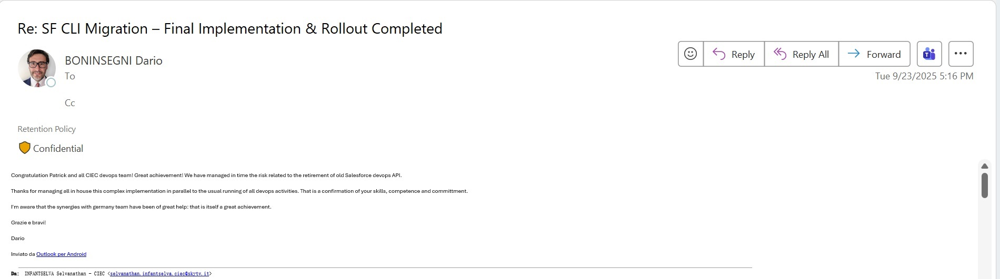
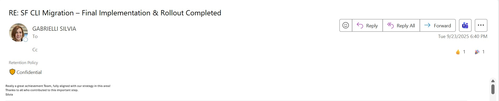
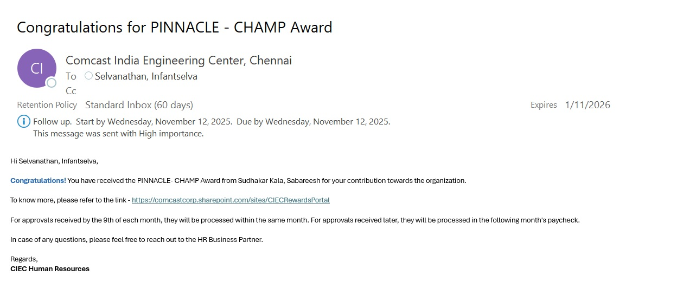

CI/CD & Release Engineering
JenkinsDeclarative PipelineScripted PipelineGitNexusRelease Packaging
I’m Infantselva, a DevOps and Engineering Operations professional at Comcast. My work spans Salesforce CI/CD modernization, Snyk security integration, Jenkins pipeline automation, and release engineering, with hands-on exposure to AWS containerization and Kubernetes deployment workflows.
A practical stack across enterprise CI/CD, security, cloud, and automation.
MLOps tools are part of an academic project currently in development.
Comcast · Chennai, India · January 2023–Present
Comcast
Comcast
Comcast
Comcast
Enterprise engineering contributions and an academic MLOps project.
Contributed to modernizing Salesforce Arcadia CI/CD workflows by moving legacy ANT-based deployment processes to Salesforce CLI. Focus areas included validation, metadata handling, package management, and authentication workflows.
Integrated security scanning into the CI/CD workflow, using severity-based gates to prevent high-severity findings from progressing through the pull request process.
Automated the full-compile workflow with Jenkins and Groovy, achieving an approximately 50% reduction in build time.
Contributed to container image build and publishing workflows using Docker, Jenkins, and Amazon ECR, alongside Kubernetes deployment workflows involving Amazon EKS and Helm.
Academic M.Tech project exploring the machine learning lifecycle, including model training and experiment tracking, API-based model serving, data/model versioning, and drift monitoring.
Created Python automation integrated with Jenkins to generate versioned release folders, reducing repetitive manual release preparation tasks.
BITS Pilani · Work Integrated Learning Programme
SSN College of Engineering · First Class with Distinction
Amazon Web Services · CLF-C02
Recognition for Salesforce CLI implementation and delivery contributions.



Open to DevOps, Cloud, Platform Engineering, and SRE opportunities.
Interested in secure delivery pipelines, cloud-native platforms, and engineering automation? Let’s connect.
Salesforce CI/CD · DevSecOps · Jenkins Automation · AWS Containers · Academic MLOps
Download resume ↗